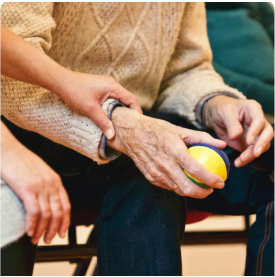

ESTÁS AQUÍ: INICIO/PUBLICACIONES
Nuestras publicaciones
El acceso a una justicia diferencial. La situación de la población en vulnerabilidad socioeconómica de Cali
CONTINUAR LEYENDO 
Impacto del activismo judicial sobre la garantía el derecho a la educación en Santiago de Cali
CONTINUAR LEYENDO 
Acceso equitativo a servicios de agua potable y alcantarillado.
CONTINUAR LEYENDO 
Boletín GAPI 2015
CONTINUAR LEYENDO 

Cartilla sobre derechos de la población adulto mayor, 2 Edición.
CONTINUAR LEYENDO 
Cartilla de divulgación con descarga gratuita ¡Saber te protege! Cartilla sobre salud sexual y reproductiva en la Legislación Colombiana
CONTINUAR LEYENDO 
Sobre vivienda digna para personas con discapacidad. Comité sobre los Derechos de las Personas con Discapacidad (2016)
CONTINUAR LEYENDO 
Sobre salud mental de niños, niñas y adolescentes desplazados en el proceso de seguimiento a la Sentencia T-025 de 2004 (2015)
CONTINUAR LEYENDO 
Sobre el derecho al agua potable en Colombia para la Comisión Interamericana de Derechos Humanos (2015)
Cartilla sobre derechos de la población adulto mayor, 2 Edición.
CONTINUAR LEYENDO 
La eficacia de las acciones populares y sus indicadores
CONTINUAR LEYENDO